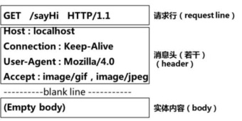

Http 006http请求头信息
http客户请求的数据格式说明  请求行(method,uri,protocol,version)、头部(headers)、实体内容(body)
- 请求行由： 请求方法method，请求网址uri，协议(HTTP) 版本1.1 构成。
- 消息头headers包括多个属性，kv形式组成
- 实体内容body是被附加在请求之后的文本或二进制数据，只有请求方式为POST的时候，实体内容才有数据（即请求参数)
下面是一个请求的例子
|
|
- HTTP请求行：请求行格式为Method Request-URI Protocol。在上面这个例子里，“GET /icwork/? search=pruduct HTTP/1.1”是请求行。
- Accept:指浏览器或其他客户可以接爱的MIME文件格式。Servlet可以根据它判断并返回适当的文件格式。
- Accept-Charset：指出浏览器可以接受的字符编码。英文浏览器的默认值是ISO-8859-1.
- Accept-Language：指出浏览器可以接受的语言种类，如en或en-us，指英语。
- Accept-Encoding：指出浏览器可以接受的编码方式。编码方式不同于文件格式，它是为了压缩文件并加速文件传递速度。浏览器在接收到Web响应之后先解码，然后再检查文件格式。
- Authorization：当使用密码机制时用来标识浏览器。
- Cache-Control：设置关于请求被代理服务器存储的相关选项。一般servlet用不到。
- Connection：用来告诉服务器是否可以维持固定的HTTP连接。HTTP/1.1使用Keep-Alive为默认值，这样，当浏览器需要多个文件时(比如一个HTML文件和相关的图形文件)，不需要每次都建立连接。
- Content-Type：用来表名request的内容类型。可以用HttpServletRequest的getContentType()方法取得。
- Cookie：浏览器用这个属性向服务器发送Cookie。Cookie是在浏览器中寄存的小型数据体，它可以记载和服务器相关的用户信息，也可以用来实现会话功能。
- Expect：表时客户预期的响应状态。
- From：给出客户端HTTP请求负责人的email地址。
- Host：对应网址URL中的Web名称和端口号。
- If-Match：供PUT方法使用。
- If-Modified-Since：客户使用这个属性表明它只需要在指定日期之后更改过的网页。因为浏览器可以使用其存储的文件而不必从服务器请求，这样节省了Web资源。由于Servlet是动态生成的网页，一般不需要使用这个属性。
- If-None-Match：和If-Match相反的操作，供PUT方法使用。
- If-Unmodified-Since：和If-Match-Since相反。
- Pragma：这个属性只有一种值，即Pragma：no-cache,表明如果servlet充当代理服务器，即使其有已经存储的网页，也要将请求传递给目的服务器。
- Proxy-Authorization：代理服务器使用这个属性，Servlet一般用不到。
- Range：如果客户有部分网页，这个属性可以请求剩余部分。
- Referer：表明产生请求的网页URL。如比从网页/icconcept/index.jsp中点击一个链接到网页/icwork/search，在向服务器发送的GET/icwork/search中的请求中，Referer是http://hostname:8080/icconcept/index.jsp。这个属性可以用来跟踪Web请求是从什么网站来的。
- Upgrage：客户通过这个属性设定可以使用与HTTP/1.1不同的协议。
- User-Agent：是客户浏览器名称。
- Via：用来记录Web请求经过的代理服务器或Web通道。
- Warning：用来由客户声明传递或存储(cache)错误。
补充.Transfer-Encoding：
- 当不能预先确定报文体的长度时，不可能在头中包含Content-Length域来指明报文体长度，此时就需要通过Transfer-Encoding域来确定报文体长度。
- 通常情况下，Transfer-Encoding域的值应当为chunked,表明采用chunked编码方式来进行报文体的传输。
- chunked编码是HTTP/1.1 RFC里定义的一种编码方式，因此所有的HTTP/1.1应用都应当支持此方式。
- chunked编码的基本方法是将大块数据分解成多块小数据，每块都可以自指定长度
当http 的URI太长时会报414 Request URI too large。
当request header过大会报400 bad request错误
解决方法：
修改两个参数
参数一：
#client_header_buffer_size：客户端请求头缓冲区大小，
client_header_buffer_size 128k;#如果请求头总长度大于小于128k，则使用此缓冲区 设置读取客户端请求头的缓存大小。大多数请求使用默认1kb已经足够了。然而，如果一个请求包含超长cookie，或者来自于wap客户端，那么1k缓存大小可能就不适用了。如果请求行或者请求头大小超过缓存大小，则使用large_client_header_buffers 设置的缓存来接收请求。
参数二：
#large_client_header_buffers：请求头总长度大于128k时使用large_client_header_buffers设置的缓存区
large_client_header_buffers 4 128k;
#large_client_header_buffers 指令参数4为个数，128k为大小，默认是8k。申请4个128k。
最大缓存个数和每个缓存的大小，用来读取超大客户端请求头。一个请求行大小不能超过1个缓存的大小，否则将返回414给客户端。一个请求头的大小同样不能大于1个缓存的大小，否则将返回400错误给客户端。缓存是按需分配的。默认1个缓存大小为8k。在请求连接过度到keep-alive状态后，缓存将被释放。